Proprietary to General Electric
Direction 5321294, Rev# 3
GOC6 Service Methods
Proprietary to General Electric |
The following information will assist in confirming if the GOC6 Operator Console is suffering from hardware issues at the prescribed Field Replaceable Unit (FRU) level.
The GOC6 Console Diagnostics are a series of low-level hardware test scripts launched by a GUI menu. These tests do not offer complete functionality testing of all hardware located in the Operator Console, but do offer a suite of tests that communicate with critical functions and hardware interfaces. This suite of tests in the Console Diagnostics provides a more convenient method for executing what would have been individual command line instructions and manual review of error logs.
Failure of the tests provides a good indication that hardware faults have been detected with the associated hardware and that FRU replacement is indicated.
| RISK TO STORAGE MEDIA | |
| SOME OF THE DIAGNOSTICS HAVE DESTRUCTIVE TESTS INVOLVING STORAGE MEDIA. READ ALL INSTRUCTIONS CAREFULLY. | |
| ALWAYS USE BLANK MEDIA IN DVD AND MOD OPTICAL DRIVES. |
| NOTE: | It is recommended that the Operator Console be rebooted before and after executing Console Diagnostics. |
| Last Revised: | 22 September 2008 |
Though Console Diagnostics is listed in the navigation of the CSD, the environment necessary to execute these diagnostics requires that the applications software be terminated. Hence, Console Diagnostics cannot be launched from CSD. Instead a message is provided when selecting Console Diagnostics from the CSD instructing the user to shut down applications and perform manual entry in a Linux terminal window to invoke the diagnostic tool. (See Illustration 1 .)
To access the Common Service Desktop, click the Service icon, then [Diagnostics] , then [Console Diagnostics] .
Illustration 1: Common Service Desktop - Console Diagnostics
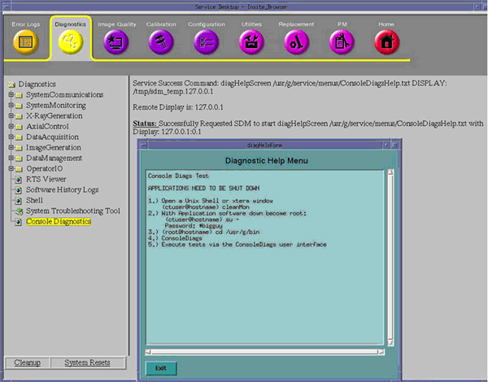
| NOTE: | Class C proprietary software must be loaded on the system and the service key installed to perform Console Diagnostics. |
Install the service key. Insert the service key in the service USB port on the Operator Console main power switch.
Reboot the Operator Console:
If applications are running, reboot the system by clicking the Shutdown icon on the desktop and selecting the Restart option. Or
Open a terminal window using the Toolchest:
Type: {ctuser@hostname} reboot [ENTER]
Just after the Operating System finishes loading and before applications start, click [Cancel] in the Application Startup window to stop applications from loading.
| NOTE: | Applications cannot be running when performing Console Diagnostics. |
Open a terminal window using the Toolchest:
Type: {ctuser@hostname} su – [ENTER]
Type the root password and press [ENTER]
Change directory:
Type: [root@hostname ~] cd /usr/g/bin [ENTER]
Launch the Console Diagnostics:
Type: [root@hostname bin] ConsoleDiags [ENTER]
Illustration 2: Terminal Window – Console Diagnostic
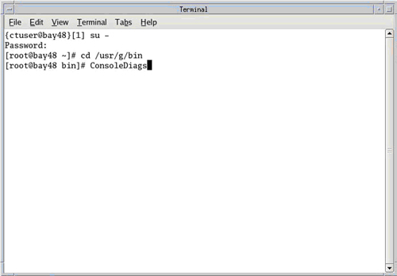
A warning pop-up box appears. Click [ENTER] to continue.
Illustration 3: Warning Pop-Up – Console Diagnostic
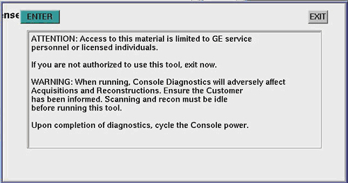
The Auto-Configuration screen appears describing the Console Type presently configured.
Illustration 4: Console Configuration Window – Console Diagnostic
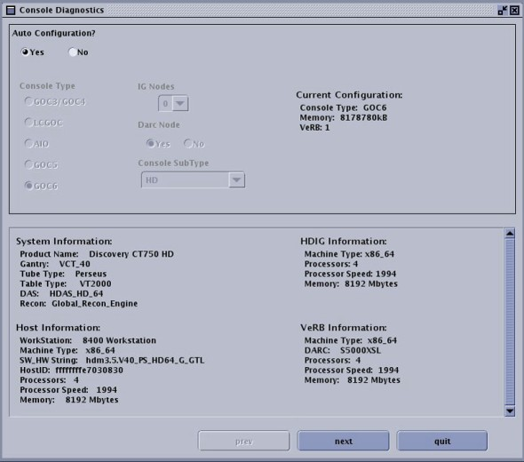
| NOTE: | This graphic is an example for a GOC6 Console on an HD system. Actual displayed information will vary based on system type. (Example - VCT with GOC6) |
Leave Auto Configuration selected as Yes. Additional information describing the Operator Console hardware and software present is listed in this window. This information is pulled mainly from the /usr/g/config/INFO file.
Click [next] to move forward. The [prev] button allows the user to return to a previous screen. The [quit] button cancels the Auto-Console diagnostic script. The [start over] button places the user at the Auto-Configuration screen.
Click [next] to move forward.
The Console Diagnostics Hardware Selection menu window appears.
Illustration 5: Hardware Selection Menu Window – Console Diagnostic
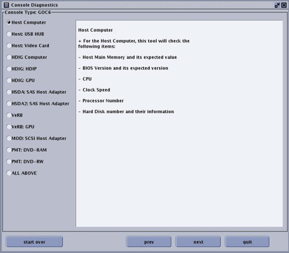
| NOTE: | This graphic is an example of a GOC6 Console on an HD System. Actual displayed information will vary based on system type. (Example - VCT with GOC6) Some of the test selections in the menu will not be present depending on console hardware configuration. |
Select the hardware to be tested by selecting the radio button next to the desired test and click [next] .
| NOTE: | When selecting which test to run, the Hardware Selection window displays the details of the test to be performed. |
The next window displayed appears after every Hardware Test selection. This information is logged for future reference and may be used by OLC or Headquarter Engineers that need to speak with persons executing the Console Diagnostics.
Illustration 6: FE Information Window – Console Diagnostic
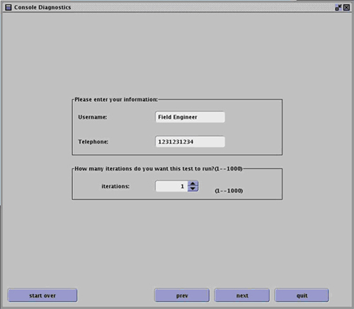
| NOTE: | The Telephone Number must be numeric characters only. Do not use spaces or other characters in the field (i.e. -, /, #...etc). |
Enter Name and Phone Number as requested.
| NOTE: | Fields in this form may be left blank. |
If desired, the selected tests can be run more than once. Select the number of iterations desired and click [next] .
The Hardware Test selected previously will now be readied for execution.
Click [Start] . The Results window will be displayed, along with the Test Pass/Fail status.
Illustration 7: Host Computer Test Result Status Window – Console Diagnostic
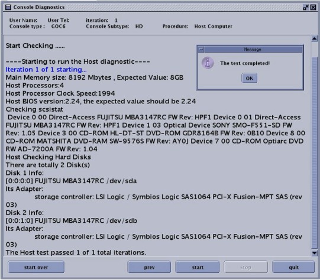
Upon completion of the test, click [OK] in the message window. Click either the [prev] or [start over] button to return to the main Hardware Test selection window.
The following menu selection descriptions (with screenshots) discuss each of the hardware tests available.
| NOTE: | The screenshots include text describing the tests to be executed and their results. These screenshots are provided for reference only. Refer to the actual text on the Operator Console screen for test and result details. Some screenshots are from VCT and others are from HD systems. |
| NOTE: | By selecting the final menu item “All Above”, all menu selections will be executed. All tests will run back to back. Screen prompts that appear when executing individual menu selections will not appear. Example: “Will erase all data on MOD! Yes / No”. Care must be taken when executing “All Above”. |
The Host Computer basic hardware information is read from the system and displayed in the result screen upon completion of the test. If the Host Computer is suffering from a major hardware fault, such as power supply of motherboard failure, the test will fail and no information will be provided. Otherwise the following information is presented:
Memory Size
Number of Processors
Processor Clock Speed
Optical and Hard Disks installed (including USD Drives)
Refer to Illustration 10 and Illustration 11.
The Host Computer USB HUB information is read and port information is displayed back in the result screen. All hardware connected to USB ports will be displayed. If a USB device is not functioning, it will not appear in the hardware listing.
USB 4 port adapter card, Rainbow Technologies
Trackball
Keyboard
Mouse
Barcode reader (optional)
USB port on front of DVD peripheral tower (optional external hard drive)
USB bridge adapter card in DVD peripheral tower
Refer to Illustration 12 and Illustration 13.
The Host Computer Video Card hardware information is read and its corresponding software driver is checked. The information is then displayed back in the result screen. If the Video Card is not present or is suffering from a hardware fault it may not be listed. Likewise, if the video card software driver is missing, the result screen will report this.
Refer to Illustration 14 and Illustration 15.
The H/VDIG Computer basic hardware information is read from the system and displayed in the result screen upon completion of the test. If the H/VDIG Computer is suffering from a major hardware fault, such as power supply of motherboard failure, the test will fail and no information will be provided. Otherwise the following information is presented:
Memory size
Number of processors
Processor clock speed
BIOS version
Refer to Illustration 16 and Illustration 17.
The HDIG: HDDIP or VDIG VDIP Card hardware is tested and the results are displayed back in the result screen. This menu selection also prompts the user if Fiber Optic Loopback tests should be run. If “No” is selected, the loopback tests will be skipped. If the loopback cables are installed properly, the H/VDIP Optical TX/RX links will be tested. Failure of any of these tests requires replacement of the H/VDIP card.
Illustration 8: HDIP Loopback Method at HDIP Card's Fiber Optic Ports
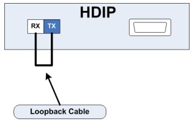
Illustration 9: VDIP Loopback Method at HVDIP Card's Fiber Optic Ports
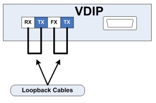
Refer to Illustration 18 and Illustration 19.
The H/VDIG GPU Card hardware is tested and the results are displayed back in the result screen. Failure of this test requires replacement of the H/VDIG GPU card.
Refer to Illustration 20 and Illustration 21.
The HSDA and its SAS Adapter Card in the VDIG computer are indirectly tested by performing a series of tests on the RAID array. These tests include:
Ping of the HSDA - Tests network connectivity to HSDA RAID controller
Access to RAID Array - Mount and unmount of array volume
RAID Query - Displays array hard disk drive status
RAID Performance - Tests array raw data access timing
Failure with pinging the HSDA is an indication of HSDA RAID controller, network cable, or network switch failure.
Failure with accessing the array volume is an indication of HSDA RAID controller, HSDA chassis, SAS controller adapter card, or corrupted array database or logical volume. Inspect the HSDA PSU and Cooling Module Status LED first, then attempt to recreate the RAID array before replacing hardware.
If any hard disk drives displayed during the RAID query are shown as “Failed”, replace the hard disk drive.
| NOTE: | The HSDA utilizes a RAID 5 configuration. The system will continue to operate with one failed hard disk drive. Plan to replace the drive at the customer’s earliest convenience. If a second hard disk drive is shown as failed, the system will not be available for scanning and all raw data will be lost. The array must be rebuilt after drive replacement. |
Refer to Illustration 22 and Illustration 23.
| NOTE: | HSDA2: SAS Host Adapter tests are the same as those for the HSDA, except for the Ping tests. PIng tests are specific to the second HSDA, which resides only on HD GOC6 Consoles. |
The VeRB Computer basic hardware information is read from the system and displayed in the result screen upon completion of the test. If the VeRB Computer is suffering from a major hardware fault such as power supply of motherboard failure, the test will fail and no information will be provided. Otherwise the following information is presented.
Memory Size
Number of Processors
Processor Clock Speed
BIOS Version
In addition two data transfer tests are executed to test networking functionality of the Reconstruction Engine. 64 Bit 1 GB test image file is generated and transferred as described below. File Checksums are checked to confirm successful transfer. Failure of these specific tests indicates possible Console Network Switch, Network Cabling or NIC Port issues associated with the computers under data transfer test.
Data Transfer between:
Host Computer to VeRB Computer
HDIG Computer to VeRB Computer
Refer to Illustration 24, Illustration 25, Illustration 26, and Illustration 27.
The VeRB GPU Card hardware is tested and the results are displayed back in the result screen. Failure of this test requires replacement of the H/VDIG GPU card.
Refer to Illustration 28 and Illustration 29.
The SCSI MOD drive basic hardware information is read from the system and displayed back in the result screen upon completion of the test. The following is checked:
MOD drive present
MOD driver installed
Access of MOD drive
Check for MOD media
Failure with these tests indicates either the SCSI controller in the Host Computer or the MOD drive has failed. Possible Host Software corruption if driver is not found.
The user will also be prompted that the system is about to erase data on the MOD disk. If “No” is selected, the test ends. If “Yes” is selected, the test erases the disk by recreating the file system and performs write test by placing a small file on the disk.
| NOTE: | Requires a MOD disk be placed in the MOD peripheral tower. Do not use the site Patient Data Archive disks. This test is destructive! |
Failure with the media test is an indication that the MOD drive or the media (disk) is bad.
Refer to Illustration 30 and Illustration 31.
The DVD-RAM drive basic hardware information is read from the system and displayed back in the result screen upon completion of the test. The following is checked:
DVD-RAM drive present
Access of DVD-RAM drive
Check for DVD-RAM media
Failure with these tests indicates either the USB controller in the Host Computer, the DVD peripheral drive tower, or the DVD-RAM drive has failed.
The user will also be prompted that the system is about to erase data on the DVD-RAM disk. If “No” is selected, the test ends. If “Yes” is selected, the test erases the disk by recreating the file system and performs write test by placing a small file on the disk.
| NOTE: | Requires a DVD-RAM disk be placed in the DVD peripheral tower. Do not use the site System State disk. This test is destructive! |
Failure with the media test is an indication that the DVD-RAM drive or the media (disk) is bad.
Refer to Illustration 32 and Illustration 33.
The DVD-RW drive basic hardware information is read from the system and displayed back in the result screen upon completion of the test. The following is checked:
DVD-RW drive present
Access of DVD-RW drive
Check for DVD-RW media
Failure with these tests indicates either the USB controller in the Host Computer, the DVD peripheral drive tower, or the DVD-RW drive has failed.
The user will also be prompted that the system is about to erase data on the DVD-RW disk. If “No” is selected, the test ends. If “Yes” is selected, the test erases the disk by recreating the file system and performs write test by placing a small file on the disk.
| NOTE: | Requires a DVD-R or -RW disk be placed in the DVD peripheral tower. This test is destructive! A DVD-R disk will work only once (disks are not re-writable). A DVD-RW disk can be used multiple times. |
Failure with the media test is an indication that the DVD-RW drive or the media (disk) is bad.
Refer to Illustration 34 and Illustration 35.
| NOTE: | By selecting the final menu item All Above, all menu selections will be executed. All tests will run back to back. Screen prompts that appear when executing individual menu selections will not appear. Example: “Will erase all data on MOD! Yes / No”. Care must be taken when executing All Above. |
The All Above selection performs all the tests selection listed on the menu. This selection is included as a comprehensive test of the GOC6 Console but is more suited for manufacturing testing. No user prompts will be displayed. The user must prepare the console for executing this test selection.
Install VDIP Loopback cables
Remove any archive or system state disks
Insert media into MOD, DVD-RAM and DVD-RW drives
Failure to perform these steps will result in failures being listed in the final results screen and destruction of data on any optical media left in the drives.
Illustration 10: Host Computer Tests
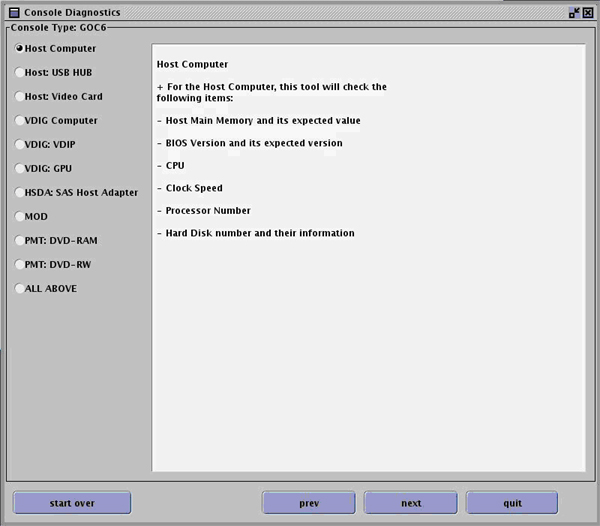
Illustration 11: Host Computer Tests Results
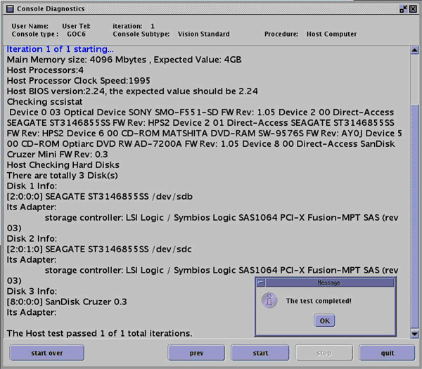
Illustration 12: Host USB Hub Tests
Illustration 13: Host USB Hub Tests Results
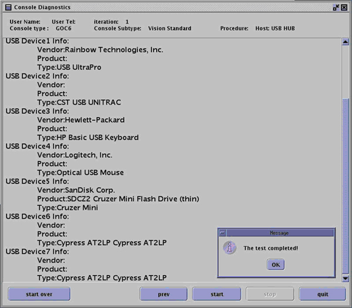
Illustration 14: Host Video Card Tests
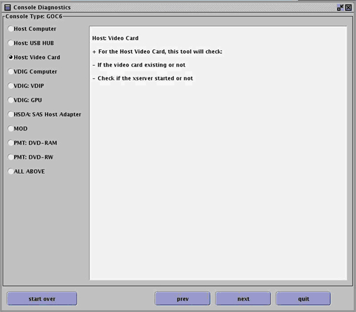
Illustration 15: Host Video Card Tests Results
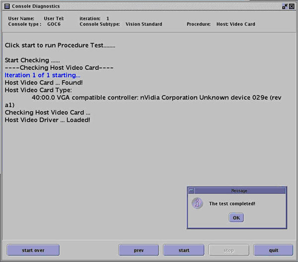
Illustration 16: VDIG Computer Tests
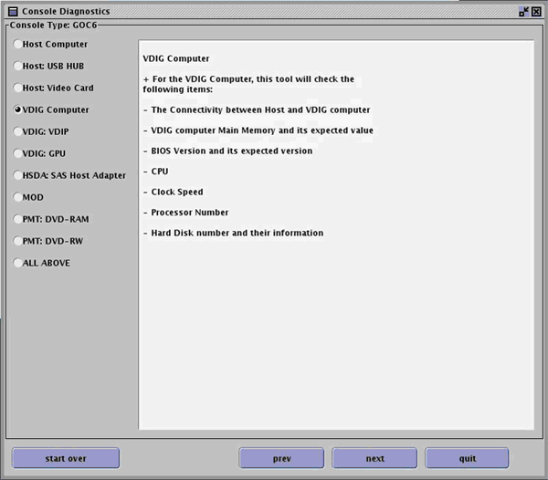
Illustration 17: VDIG Computer Tests Results
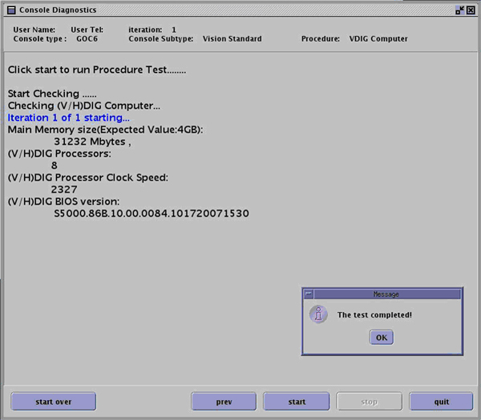
Illustration 18: VDIG VDIP Tests
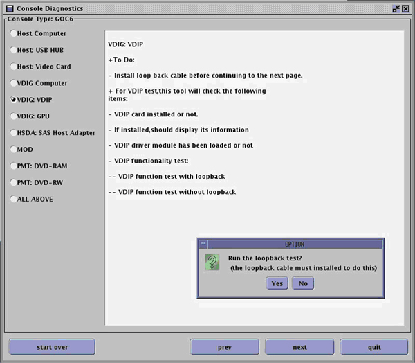
Illustration 19: VDIG VDIP Tests Results
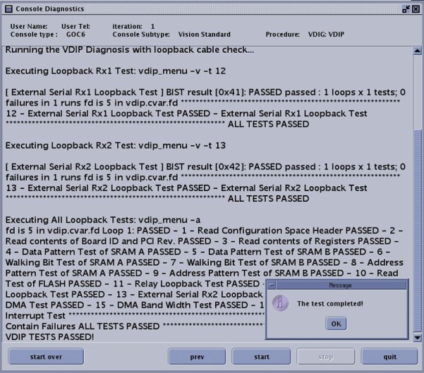
Illustration 20: VDIG GPU Tests
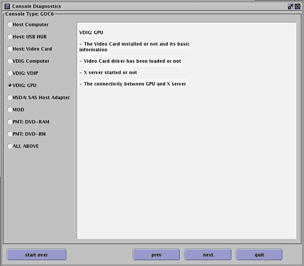
Illustration 21: VDIG GPU Tests Results
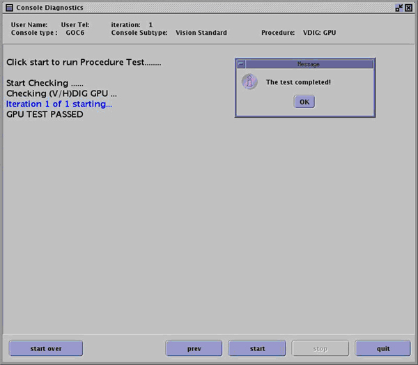
Illustration 22: HSDA Tests
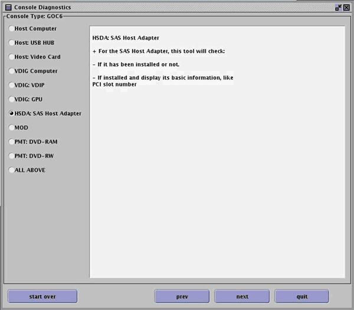
Illustration 23: HSDA Tests Results
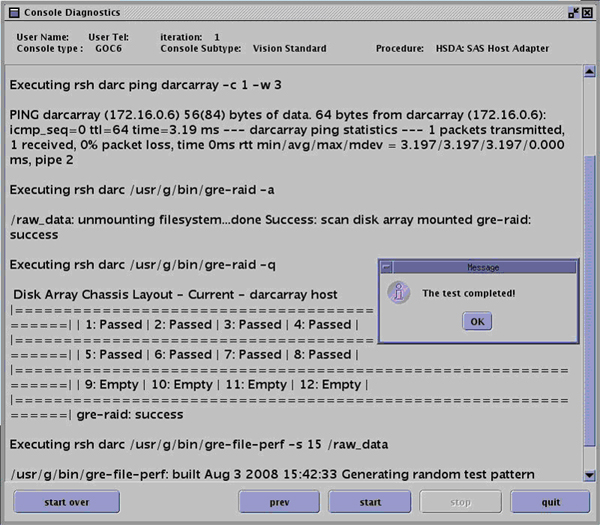
Illustration 24: VeRB Computer Tests
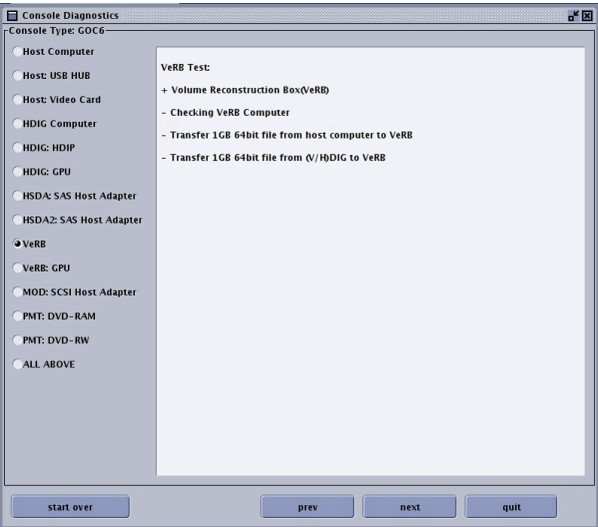
Illustration 25: VeRB Computer Test Results, Host to VeRB File Transfer Test Prompt
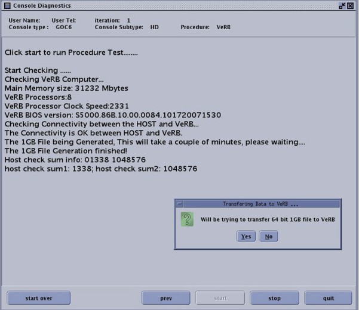
Illustration 26: VeRB Computer Test Results, Host to VeRB File Transfer Test Result, H/VDIG to VeRB File Transfer Test Prompt
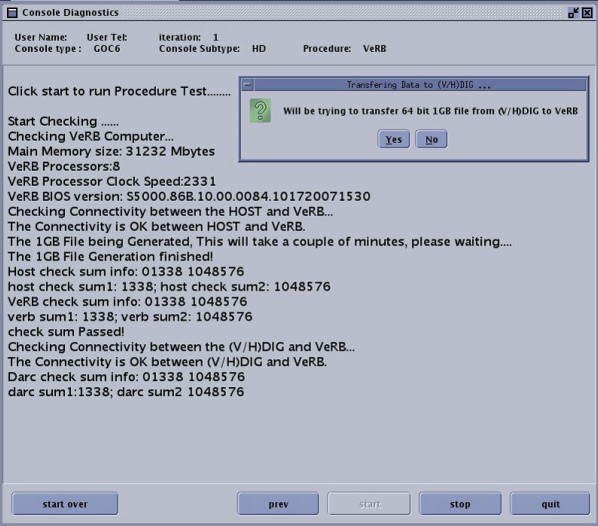
Illustration 27: VeRB Computer Test Results, Host to VeRB File Transfer Test Result, H/VDIG to VeRB File Transfer Test Result
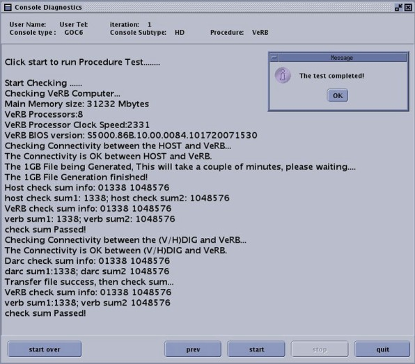
Illustration 28: VeRB GPU Tests
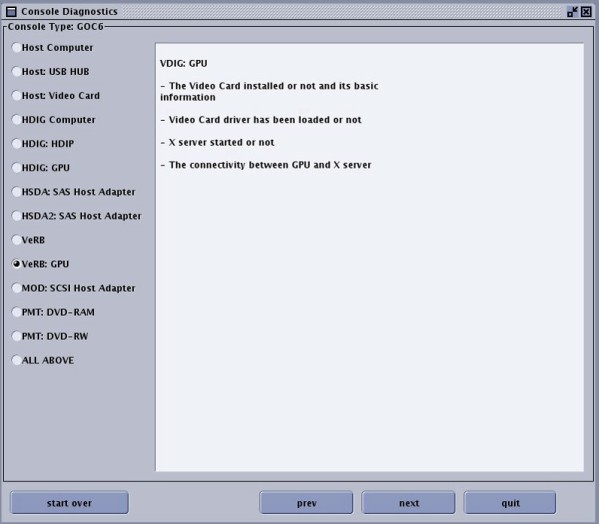
Illustration 29: VeRB GPU Tests Results
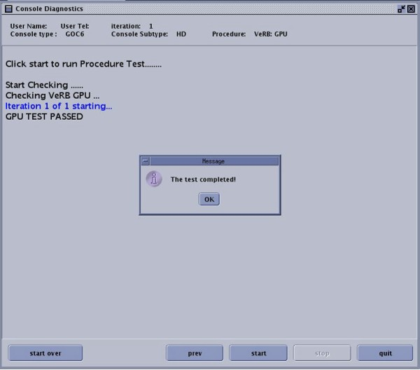
Illustration 30: MOD Tests
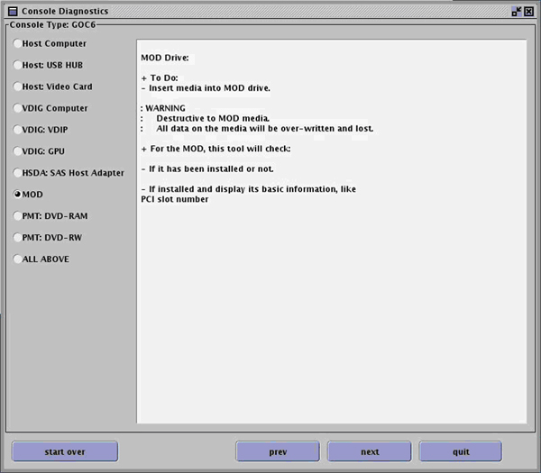
Illustration 31: MOD Tests Results
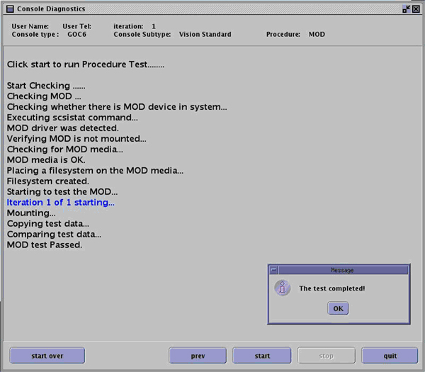
Illustration 32: DVD-RAM Tests
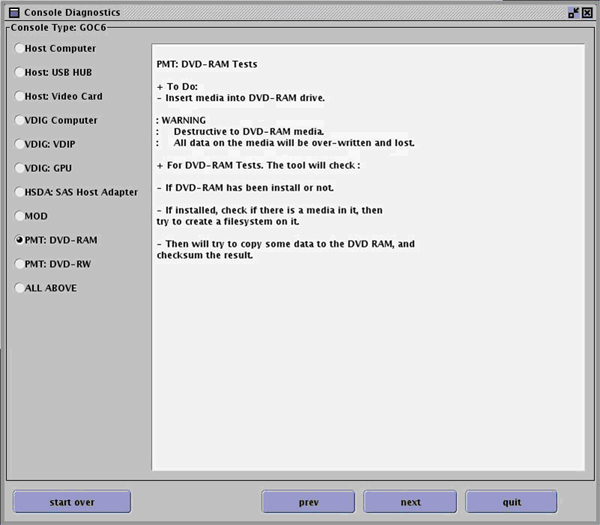
Illustration 33: DVD-RAM Tests Results
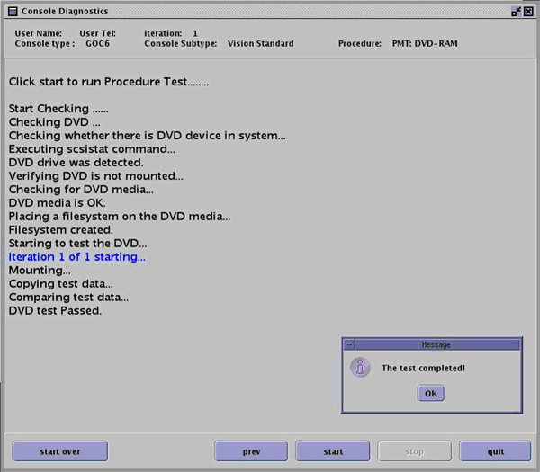
Illustration 34: DVD-RW Tests
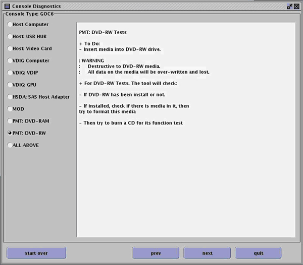
Illustration 35: DVD-RW Tests Results
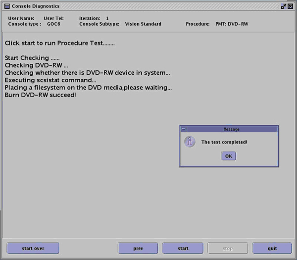